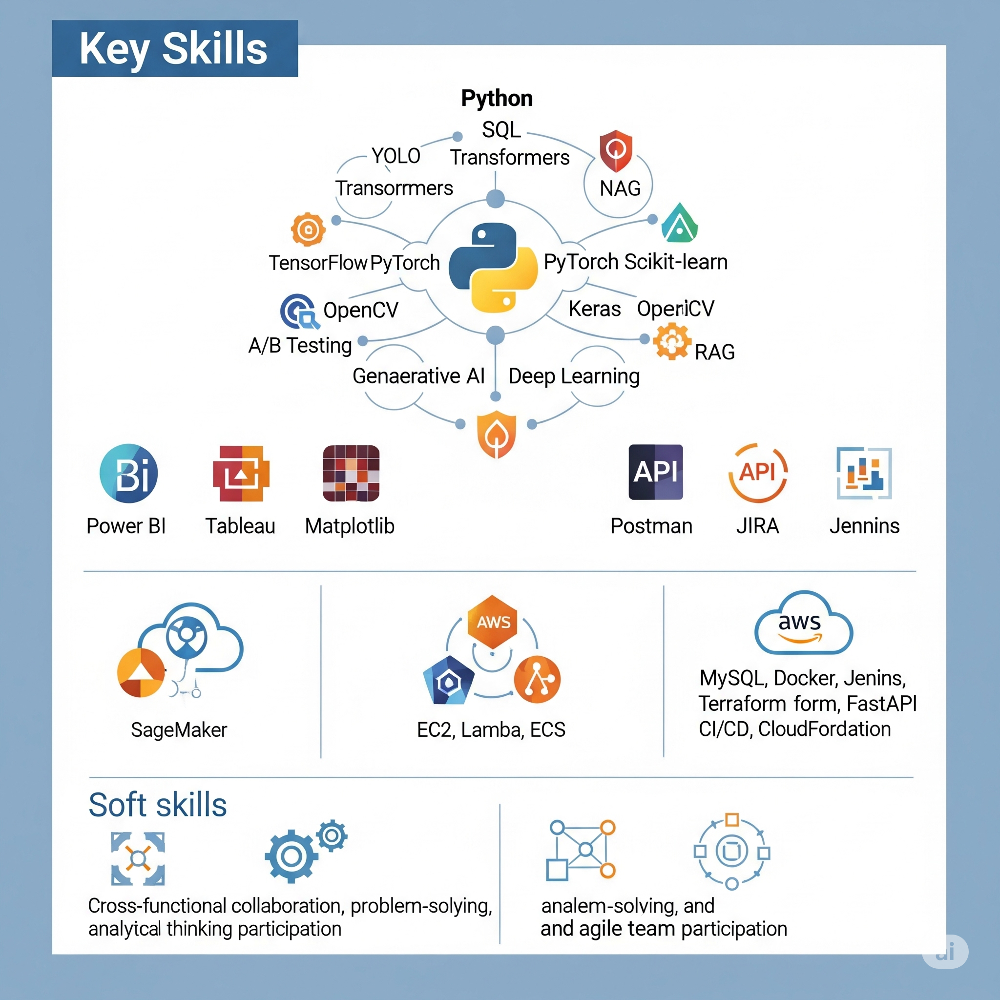

Hi, I’m
AI & ML Engineer
Building scalable deep learning, NLP & computer vision solutions.
About
AI & Machine Learning Engineer
AI & Machine Learning Engineer with hands-on experience in building and deploying scalable deep learning and NLP models using TensorFlow, PyTorch, and Flask. Proven track record of improving business KPIs (20% efficiency, 15% retention) and developing real-time AI applications in healthcare and computer vision. Actively seeking full-time roles in ML, NLP, or computer vision with visa sponsorship.
Core Competencies
- Languages: Python, SQL
- BI Tools: Power BI, Tableau
- Frameworks: TensorFlow, PyTorch, Scikit-learn, Keras
- AI/ML: Generative AI, NLP, Deep Learning, YOLO, Transformers, A/B Testing
- Tools: Postman, JIRA, ALM, Jenkins, AWS, MySQL, OpenCV
- NLP: Tokenization, Named Entity Recognition
- Development Lifecycle: ML model development & deployment, EDA, data curation, CI/CD for ML, API integration
- Soft Skills: Cross-functional collaboration, problem-solving, analytical thinking, agile team participation

Work Experience
AI & ML Intern
Quantiphi (Nov 2022 – Jan 2023)
Created and deployed machine learning models to increase prediction efficiency and accuracy by 20%.
Performed exploratory data analysis (EDA) and preprocessing on large datasets to generate insights and train models.
Integrated Flask REST APIs with ML models, enabling scalable access and real-time predictions.
Collaborated with cross-functional teams to verify model performance and set requirements.
Data Scientist
(Jan 2023 – Jul 2023)
Built end-to-end ML pipelines using customized predictive models to increase client retention by 15%.
Oversaw A/B testing projects that improved feature conversion rates by 12%.
Developed interactive dashboards and visual analytics tools to reduce decision-making time by 30%.
Applied statistical analysis and model evaluation techniques to verify predictive accuracy and resilience.
Projects
Automated Claim Processing with AI
(Jan 2024 – May 2024)
Created an NLP system with generative AI support to expedite medical claim processing and reduce manual labor by 40%.
Extracted and cleaned structured and unstructured healthcare data using advanced data mining and preprocessing techniques.
Built a MySQL-backed pipeline for real-time claim classification and document processing.
Tech Stack: Flask, NLP, MySQL, TensorFlow, Python, Transformers
AI-Based Traffic Sign Detection (T.R.A.C.)
(Sep 2024 – Dec 2024)
Used YOLOv8 to recognize traffic signs in real time with 95.7% mAP@0.5.
Packaged data-science prototypes into production-grade web apps via Flask.
Automated training and testing workflows using Jenkins; deployed models on AWS.
Tech Stack: PyTorch, OpenCV, Flask, TensorFlow, AWS, Jenkins
Automated SQL Data Pipeline
(Mar 2024 – Jun 2024)
Designed and implemented an ETL pipeline on AWS Glue to ingest, transform, and load 10M+ records nightly.
Optimized complex SQL queries in Amazon Redshift, reducing query runtimes by 60%.
Orchestrated workflows with AWS Step Functions and Lambda for failure-resilient processing.
Tech Stack: AWS Glue, Redshift, Lambda, Step Functions, SQL, Python
Conversational AI Chatbot
(Apr 2024 – Jul 2024)
Built a customer-service chatbot using Hugging Face Transformers and RAG for context-aware replies.
Integrated with AWS Lex and DynamoDB to store user sessions and conversation history.
Deployed via AWS API Gateway + Lambda for serverless, scalable access.
Tech Stack: Python, Transformers, AWS Lex, DynamoDB, RAG, API Gateway, Lambda
RAG-Powered Document QA
(Aug 2024 – Oct 2024)
Created a Retrieval-Augmented Generation system that ingests PDFs into a vector store (ChromaDB).
Used OpenAI embeddings + LangChain to answer user queries against the document corpus.
Implemented a Flask frontend for interactive QA and fine-grained context retrieval.
Tech Stack: Python, LangChain, ChromaDB, OpenAI API, Flask
Document OCR & Data Extraction
(Feb 2024 – Apr 2024)
Developed an OpenCV+Tesseract pipeline to scan invoices and receipts at 98% accuracy.
Parsed layout, extracted tables, and normalized data into MySQL for analytics.
Automated the entire process with a Dockerized microservice and REST API.
Tech Stack: Python, OpenCV, Tesseract OCR, Docker, MySQL, FastAPI
Certifications
- Python for Computer Vision with OpenCV and Deep Learning – Udemy (Jan 2024)
- Foundations in Generative AI tools and Artificial Intelligence – LinkedIn (Aug 2023)
- Artificial Intelligence Virtual Experience Program – Cognizant (Mar 2022)
Education
-
M.S. in Artificial Intelligence
University of North Texas (Aug 2023 – May 2025)
• Relevant Coursework: Deep Learning, Natural Language Processing, Data Science, Machine Learning
• GPA: 3.6 -
B.Tech in Mechanical Engineering
S.V. College of Engineering (Jun 2019 – Apr 2023)
• Academic Honors: Top 5% in class, AI Research Assistant